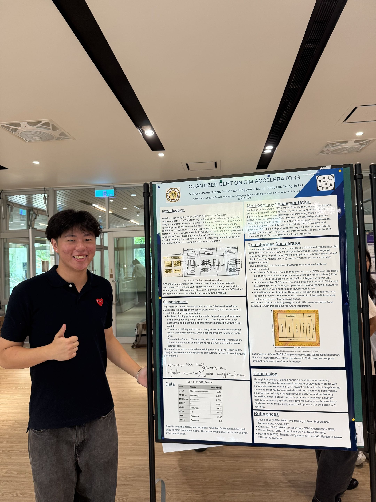
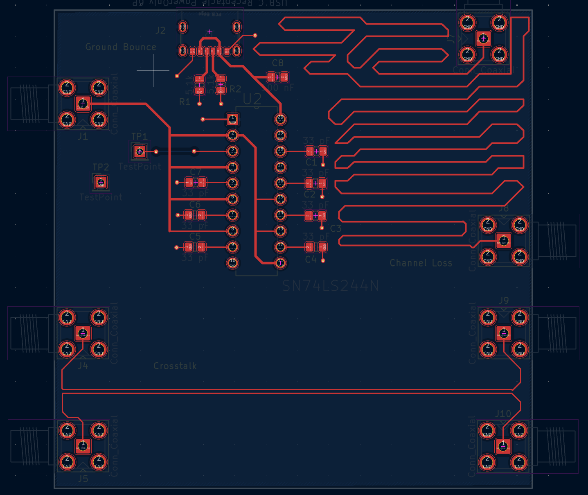
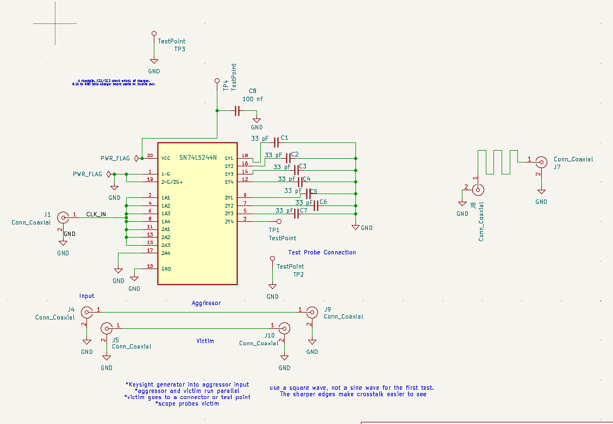
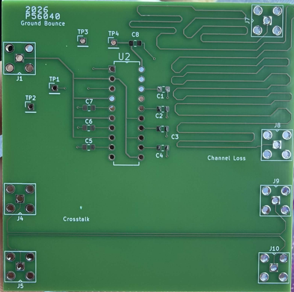
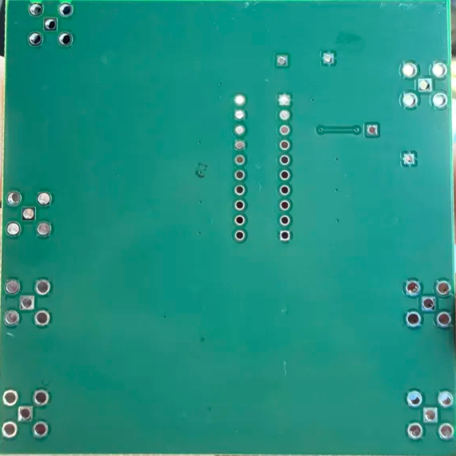
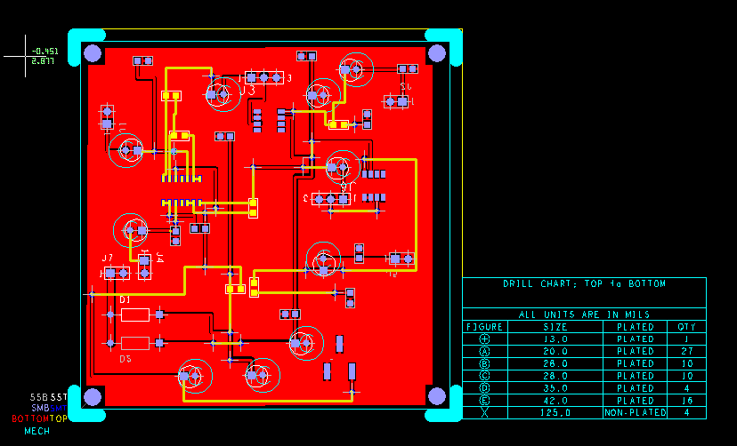
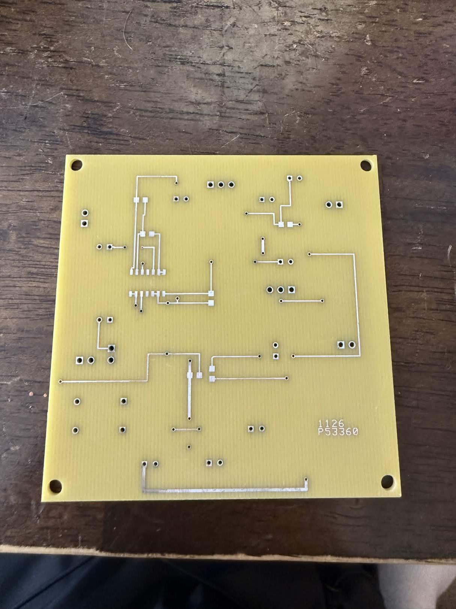

Quantized BERT on CIM Accelerators
Conducted transformer quantization research at National Taiwan University by implementing quantization-aware training in PyTorch on a compact BERT model for INT8 inference. Evaluated the model across seven GLUE benchmark tasks while preserving hardware efficiency.
Generated quantized weights, biases, and softmax lookup tables, then exported them as JSON files formatted for future integration with a 28 nm CMOS compute-in-memory transformer accelerator using bit-serial data streaming and SRAM-based matrix multiplication.
View Research Poster
High-Speed Signal Integrity PCB
Designed and fabricated a KiCad PCB to experimentally demonstrate ground bounce, crosstalk, and channel loss. The board uses a 74AHC241 8-bit buffer, capacitive output loading, adjacent parallel traces, and long serpentine traces to create measurable signal-integrity effects.
The board was designed for testing with a 10 MHz, 5 V peak-to-peak input signal using an oscilloscope and spectrum analyzer. Test structures and coaxial connections were included to measure voltage spikes, coupled noise, rise-time degradation, and frequency-dependent signal loss.
Schematic

PCB Design and Fabricated Board



Audio Amplifier PCB
Designed a two-channel audio amplifier schematic in Cadence OrCAD Capture using LM324 operational amplifiers for input conditioning and gain control, followed by LM386 power-amplifier stages for driving external speakers.
Created the PCB layout in Cadence Allegro, including component placement, custom footprints, signal routing, power distribution, spacing constraints, and design-rule verification. Completed DFM checks and generated Gerber and drill files for fabrication.
Schematic

PCB Layout and Manufacturing Output




FPGA Arcade Game with Real-Time VGA Graphics
Designed and implemented a hardware-based arcade game in structural Verilog on a Basys 3 Artix-7 FPGA. Built modular logic for VGA timing, player movement, pseudo-random apple spawning, independent ripeness timers, collision detection, score tracking, and lives management.
Developed a 640 × 480, 60 Hz VGA graphics pipeline that mapped game state directly to RGB outputs with no software rendering. Created real-time pixel logic for the player, tree, apples, borders, and ground, along with timer-driven apple color changes and hardware-controlled game behavior.
Hardware Demonstration
Key Features
- Generated VGA synchronization and active-video timing for a 640 × 480 display at 60 Hz.
- Implemented real-time pixel rendering for the player, apples, tree, ground, and screen boundaries.
- Used an LFSR and independent hardware timers to control apple positions, spawning, ripeness, and color changes.
- Developed hardware collision detection for catches and misses, along with score, lives, and game-over logic.
- Displayed game information using the Basys 3 seven-segment display and onboard LEDs.